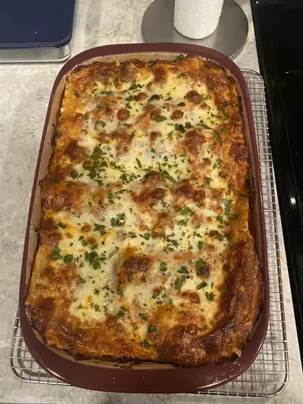

Lasagna

Description
Making lasagna can be time-consuming, but the results are well worth the wait.
Ingredients
- Cheese
- Tomato sauce
- Pasta sheets
Steps
- Place thin layer of sauce in bottom of dish
- Place pasta sheets over sauce
- Place cheese over pasta sheet
- Repeat steps 1-3